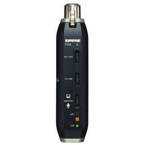
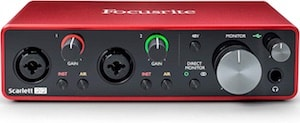
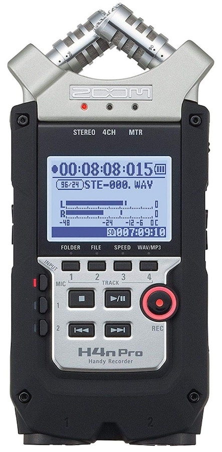

What Is A Microphone Audio Interface?
As mentioned, a microphone interface is an audio interface. These interfaces essentially allow communication between various audio input and output devices and digital
software.Microphone interfaces, then, allow specifically for the communication between microphones and digital software and computers.
Note that the vast majority of audio interfaces on the market today have microphone inputs and are, therefore, microphone interfaces as well.
The term “microphone interface” is used much less often as an “audio interface,” though they often refer to the same piece of audio equipment.
How Do Microphone Interfaces Work?
So let's start with the microphone. A microphone is a transducer that converts sound (mechanical wave energy) into audio (electrical energy).This electrical audio signal is an AC voltage
that effectively mimics the sound waves at the mic diaphragm (only in electrical form). The mic signal is outputted via the mic output and through the connected mic cable.
The mic cable is typically a balanced XLR cable and carries the mic signal to the microphone interface.
At the microphone interface, the signal is amplified by a mic preamp. This boosts the relatively low “mic-level” signal to a healthier “line-level” signal for use with other audio equipment (professional or consumer-grade).
So far, there is nothing unique or special about this signal path. Many mic preamps, mixing consoles, and analog mic inputs share this initial signal path.
However, the mic signal passes through an analog-to-digital converter at the audio interface and is effectively converted from an AC electrical voltage to digital information (1's and 0's).
This digital mic signal is then sent out of the audio interface to a connected computer or digital mixer.
The digital mixing/routing software is where things get really interesting. An inputted microphone signal can be sent to multiple channels within the software. It can be recorded and played back through the same interface.
The same digital cable (USB, Firewire, Thunderbolt, etc.) that carried the mic signal to the computer will carry digital audio out of the computer. This outputted digital audio is then passed through digital-to-analog converters before being
sent out of the interface's outputs.
These outputs include monitor outputs, headphone outputs, and other bus outputs.
Some Audio Interface Examples
Microphone audio interfaces range in complexity from super simple to very complicated, capable of intricate routing. Let's take a look at a few examples.
Single-Channel Audio Interfaces
Single microphone audio interfaces can be as simple as a one-channel analog-to-digital converter. One example is the Shure X2U (link to check the price on Amazon)

Double-Channel Audio Interfaces
Popular two-channel microphone audio interfaces include the Focusrite
Scarlett 2i2 (link to check the price on Amazon)

Built-In Microphone Interfaces
Many digital recorders and mixers will have built-in microphone interfaces that convert the analog microphone input signals to digital audio that the mixer/recorder can effectively use.
For
example, the popular Zoom H4n Pro (link to check the price on Amazon)has a stereo pair of analog microphones in its design with a
built-in audio interface (with analog-to-digital converter) to allow it to record the mics in a digital audio format.
